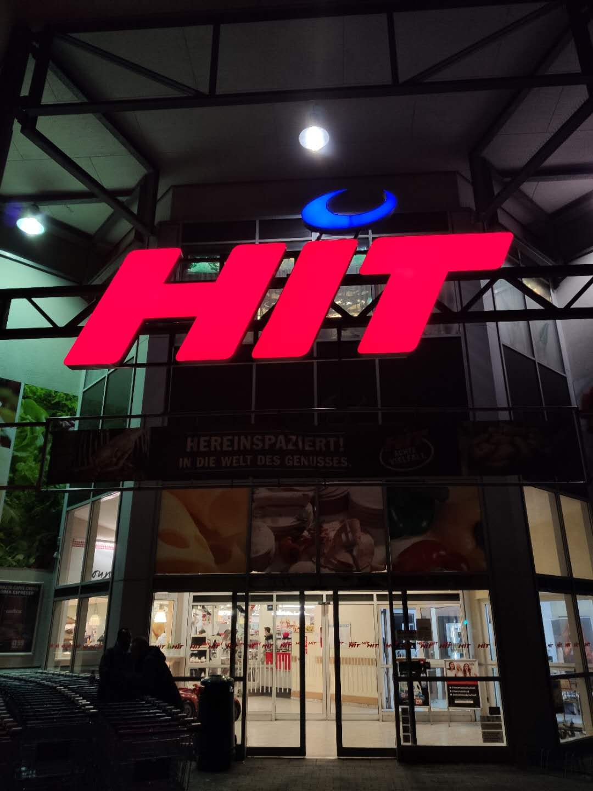
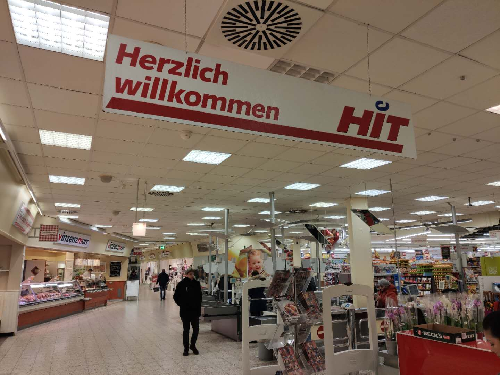
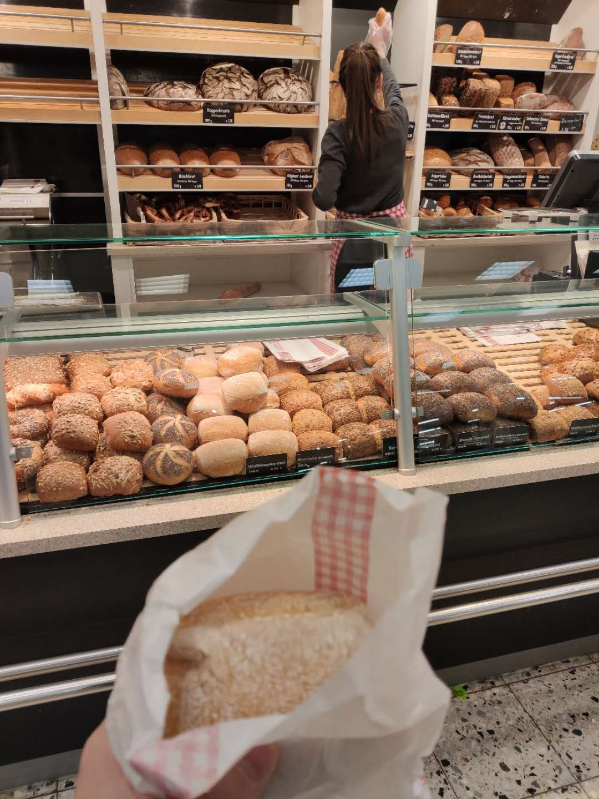
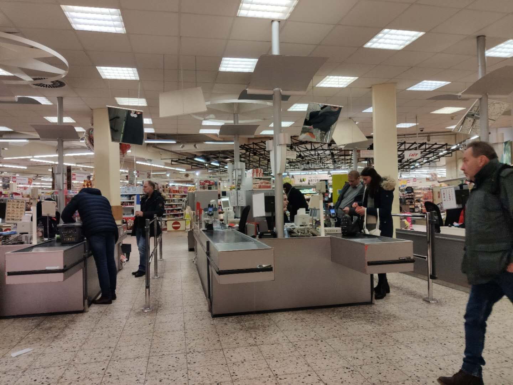
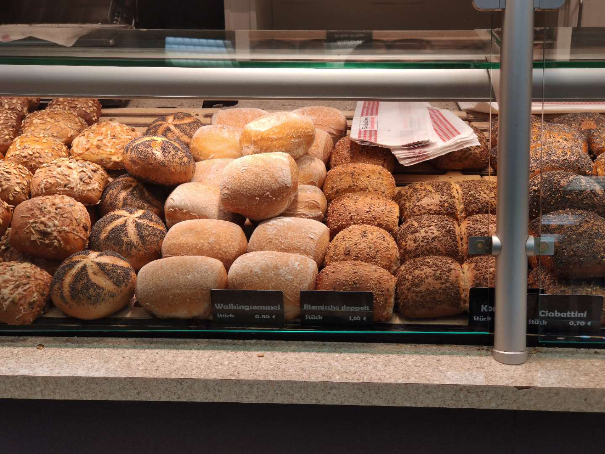

昨天几件事：
- 整理论文；
- 和家里打电话；
- 继续网购防护服；
- 感冒睡觉；
- 和F共进晚餐。
早上起来整理了Mechnical systems ans signal processing杂志上第135-140卷有关Bearings的论文，并发给了G老师。这段时间，被口罩、防护服占满了大脑的我，意识到自己的主业已经停摆了多时。既然十一个箱子已经寄回国了，我也该收心忙于自己的事情了。
和家里打电话，父母、大姨、三姨、老舅、姥姥、表弟在一起其乐融融。家人们在一起每天都很开心，因为疫情，享受难得的团聚时光。教老妈如何辨别外科口罩后，发现老爸单位发的口罩有那种一次性无纺布的口罩，对于防病毒也没太大作用，好在还有一些口罩符合要求。三姨得知大蒜精的好处，让我再去买5盒。
大哥大嫂说医大一的呼吸科、感染科、重症监护室的大量骨干医护人员都被派到湖北去了，甚至有的科室就剩一个主任和几个护士了。去前线的还有大嫂的几个好朋友，还有老爸的救命大夫们，我们心里也不是滋味，只希望她们能平安回哈尔滨。大哥大嫂又嘱咐我再买二十套防护服，在real的网站花了91欧，下完单等待发货。
连续感冒三天，白天又睡了一会。睡醒感觉好多了。洗漱，准备出去和F吃饭。在和合吃的，辣子鸡、肥肠酸菜，两个人花了35欧。
外表有多优秀，内心就有多痛苦。形容F同学，真是再贴切不过了。通过她，我看到她母亲的冷漠、没有人情味、虚荣、自私、缺心眼、脑袋进水。真是开眼界了。反倒更同情和觉得她好苦，运气不好，摊上这样一个妈。她如此优秀，难以想象竟然还有这样的母亲，只能说她母亲运气好，摊上这样一个优秀的女儿。送完她回家，我到家已经夜里十二点出头。与乍暖还寒的此时季节相比，她的母亲更让人心寒。到家后，洗漱完，又听了听油管上的疫情爆料，一点多，睡觉了。




